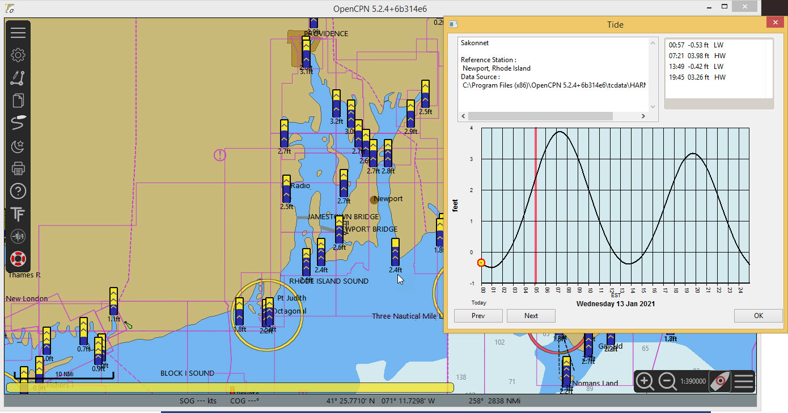

Using the TideFinder plugin
Table of Contents
Introduction
OpenCPN makes it easy to find the tidal predictions for the current date/time. If predictions are needed for some date in the future a lot of 'Next' button pushes are needed. Using the plugin the calendar can be used to find a date in the future.
-
A limited number of ports are shown, closest to your location.
-
Calendar for selecting dates
-
The same information as the main program offers.
Getting the TideFinder plugin
With the main program open select Options. Then choose plugins. Select the Beta catalog. Update the Beta catalog. At the bottom of the list of Beta plugins that are available is TideFinder. Press Install. After installation enable the plugin, with a tick in the box.
